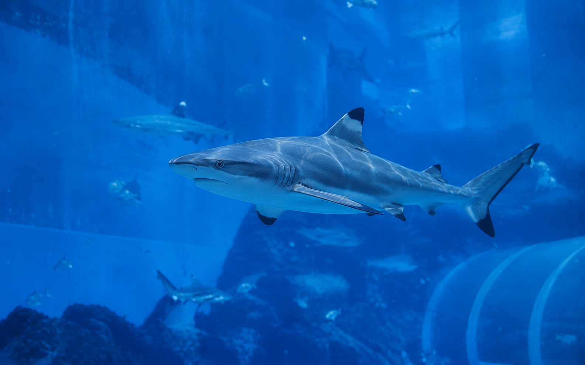
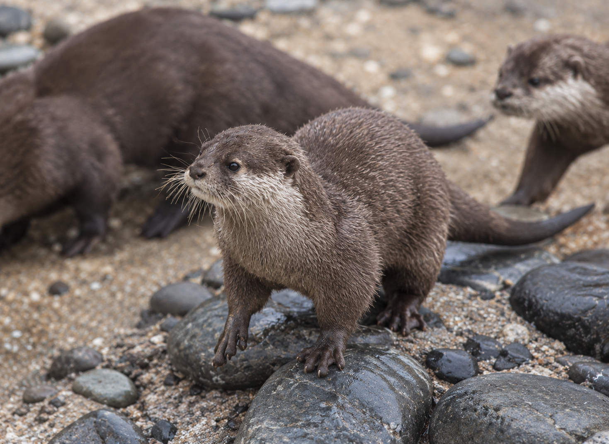
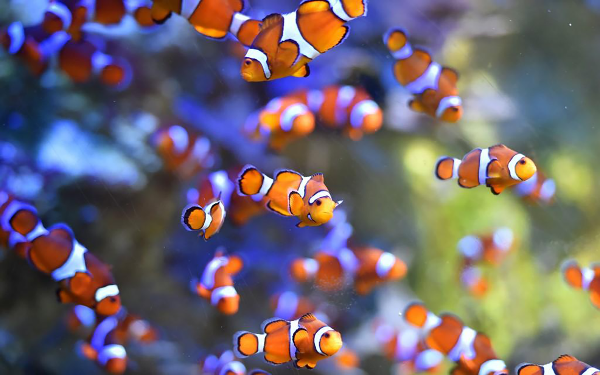
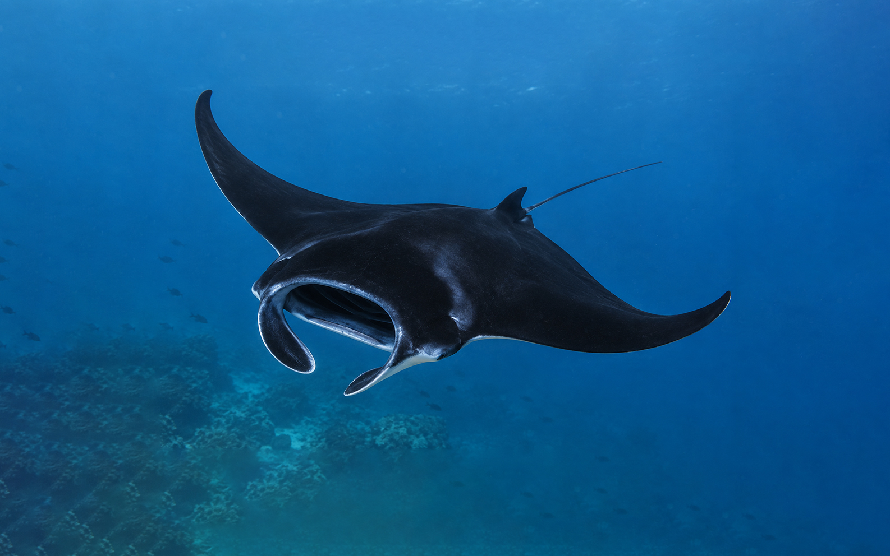
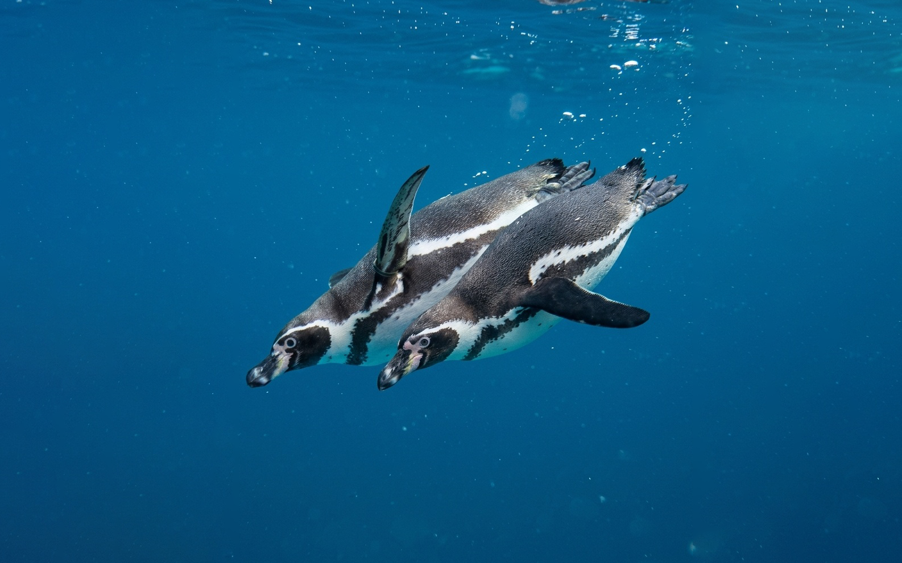
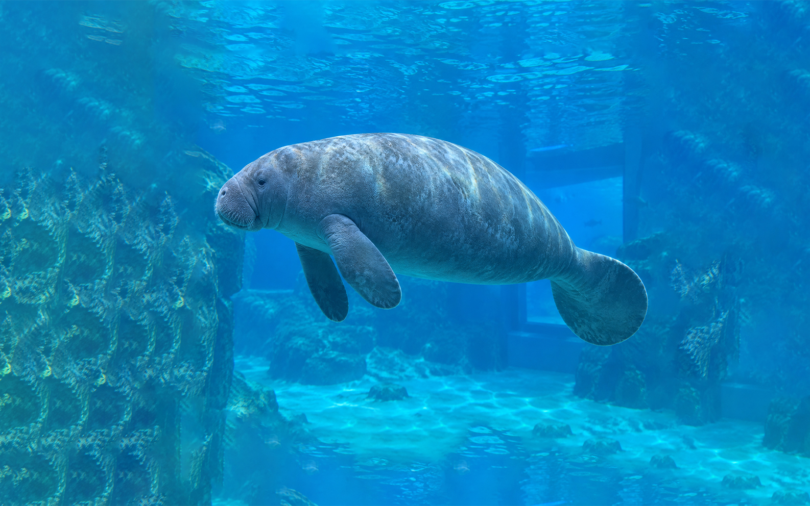
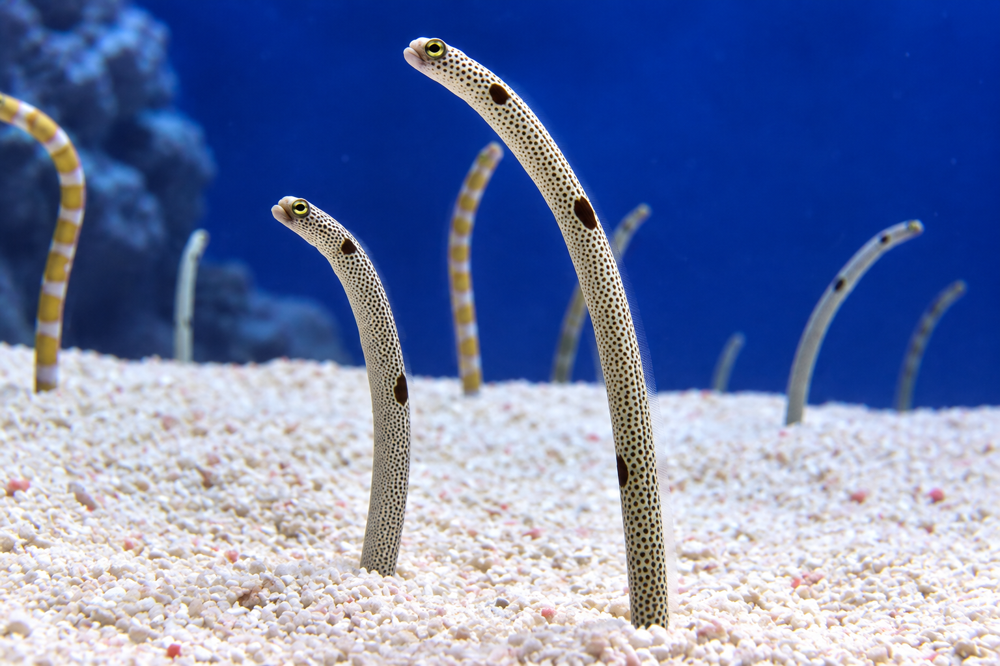
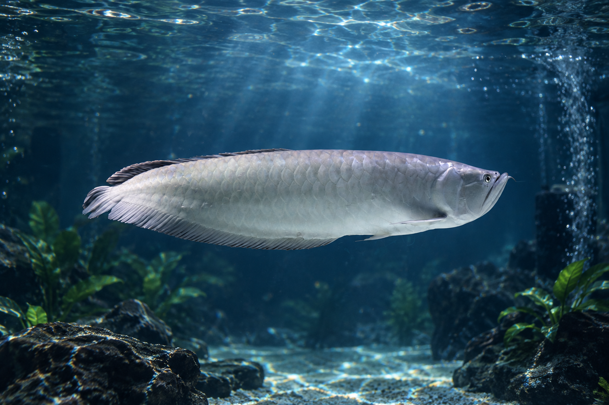
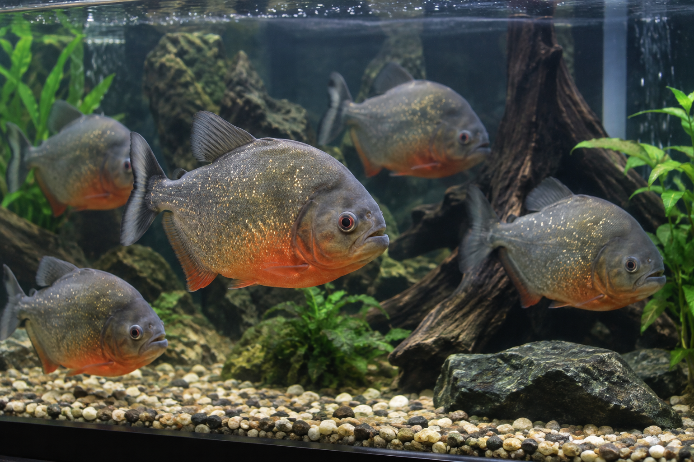

흑기흉상어
Carcharodon carcharias
푸른 바다를 유영하는 가장 완벽한 포식자. 넓은 심해 탐험관에서 유유히 움직이는 상어의 우아한 실루엣을 만나보세요.
- 서식지
- 열대·온대 해역
- 만나는 곳
- 심해 탐험관
- 관람 포인트
- 느린 듯 강한 유영
아쿠아월드에서 함께 살아가는 생물들의 이야기를
서식지와 특징으로 천천히 살펴보세요.
수조관에서 만날 수 있는 대표 생물들을
테마별로 찾아보세요.

Carcharodon carcharias
푸른 바다를 유영하는 가장 완벽한 포식자. 넓은 심해 탐험관에서 유유히 움직이는 상어의 우아한 실루엣을 만나보세요.

작은발톱수달 Amblonyx cinerea
흰동가리 Amphiprion ocellaris
흑가오리 Dasyatis matsubarai
훔볼트펭귄 Spheniscus humboldti
매너티 Trichechus senegalensis
가든일 Heteroconger hassi
아로나와 Osteoglossum bicirrhosum
피라냐 Pygocentrus nattereri